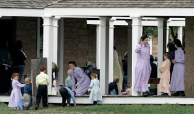
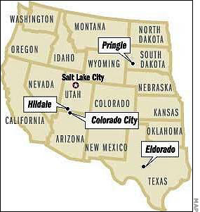
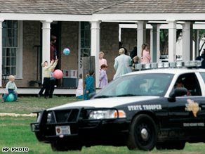

Innocence amid subsidized depravity: The FLDS Church is a cult, and its leaders are corrupt, tax-fattened perverts -- but the children are entirely innocent, and they need their mothers.
The State giveth, the State taketh away; blessed be the name of the State. --
The implicit, but obvious, doxology of the most murderous cult in history.
(See the update at the end of the essay.)
The Fundamentalist Latter-day Saints Church (FLDS) is, by any rational definition, a cult. Its adherents are the property of the church's ruling sacerdocracy, an all-powerful priestly caste headed -- until recently -- by Warren Jeffs, the hereditary "prophet" of the sect.
The government of the State of Texas presides over an administrative unit of a Regime that is, by any definition, tyrannical and corrupt. That Regime, and all of its subsidiaries, implicitly claims ownership (including the power of discretionary killing) over every human being residing within our national borders, and any human being anywhere the Regime can project its power.
Those in presiding positions within the Regime, particularly the Chief Executive, are widely perceived as numinous beings, clothed in a form of sanctity that elevates them above the common mass of mundane humanity. They are the beneficiaries of a cult of power that includes rituals intended to celebrate the benevolence of the Regime's power and the infallibility of its judgments.
It's really difficult to say which of these two cults -- the FLDS Church, or the Imperial Regime -- is worse, in principle. In practice, the Regime's evil easily outstrips that of the Mormon offshoot, since the latter is commendably disinclined to impose itself beyond its own ranks. The Regime, of course, eagerly inflicts its armed benevolence on distant lands with the slightest provocation, or none at all, when it can get away with doing so.

That being said, it must also be pointed out that these two cults have been collaborators, after a fashion: A business owned and operated by the FLDS junta was the beneficiary of a relatively minor no-bid contract with the Pentagon, a development that surprises me not at all.
As I noted in this space roughly two and a half years ago, the FLDS ruling elite has been very generously underwritten by government subsidies of various kinds. Mothers joined in "spiritual" polygamy with FLDS men are regarded as single mothers and receive welfare benefits to raise their children. The church itself operated a government-funded school district in Colorado City, the Arizona half of the border-straddling twin cities dominated by the cult. Both Colorado City and Hildale, which constitutes the Utah half of that community, have had state-recognized police forces that were dedicated primarily to enforcing the will of the FLDS prophet, Warren Jeffs.
Before Jeffs was convicted and sent to prison in Utah as an accessory to rape (for compelling a 14-year-old girl to marry her 19-year-old cousin), he was -- as Washington's Cultist-in-Chief describes his role -- The Decider for the FLDS community. From his prison cell, as he awaits further prosecutions, Jeffs continues in that role to a limited extent.

FLDS members, particularly women, have been required to submit to Jeffs' will, obeying his every instruction in matters both momentous and mundane. Jeffs controlled the United Effort Plan, the economic collective that owned all of the church's wealth and other assets. Most importantly, he claimed the right and power to arrange marriages, including polygamous unions between young girls barely able to conceive children and older men able to sire them only with pharmaceutical assistance.
Jeffs also presumed to "re-assign" wives to punish men who rebelled against his supposed authority, and to reward those he considered righteous. The defining tenet of the FLDS faith is the idea that a man cannot achieve exaltation in the hereafter (not merely salvation from hell, but literal ascension to godhood) without having at least three wives. Thus Jeffs had at his disposal a uniquely effective tool of blackmail, capable of inflicting both severe emotional pain and (for those who believed the Church's teachings) throwing up an impediment to a man's eternal ambitions.
Behind every order Warren Jeffs issued to his followers was this implied threat: You must obey me in all things, or lose everything you care about.

"Man actually belongs to [the] prophet, willing to do what is directed," Jeffs explained in one sermon, delivered in a tone of somnolent sanctimony Mormons of all varieties have come to know as the "General Conference Cadence." Women in the scheme of things described by Jeffs were to concentrate entirely on submitting their husbands under the supervisory direction of the FLDS prophet.
Since Jeffs and his oligarchy owned all of the FLDS land, capital, assets, and homes, and commanded the loyalty of a police force, they had the means to impoverish, expel, or (if necessary) annihilate anybody seen as an apostate or trouble-maker. It was easy to qualify on either count, given the odd and unpredictable contours of Jeffs' authoritarian whimsy: One week, basketball (which, if Mormons were a nation, would be their national sport) was permitted, the next playing it was a soul-imperiling sin.
A few years ago, some 400 young men who had never known anything but the FLDS way of life were targeted for harassment by the FLDS police. Eventually they were expelled, most likely to reduce the competition for young women coveted by older church elders as potential "plural wives." Those young men, commonly known as the "Lost Boys," were relatively fortunate: Some within the cult who have rebelled against the prophet and his teachings have reportedly been abducted by FLDS police and forcibly confined in mental institutions on false pretenses, an authentically Soviet touch. Others, such as FLDS "apostate" Richard Holm, had their families torn apart by cult officials (who exercised both religious and government power).
One good cult deserves another: SWAT operatives in an assault vehicle paid for with federal subsidies raid the "Yearning for Zion" (YFZ) Ranch, the FLDS temple complex in Texas.

Most Mormons are members of the Church of Jesus Christ of Latter-day Saints (LDS), the largest of the scores of sects claiming origins in the career of Joseph Smith. The LDS leadership has been entirely silent regarding the recent crack-down on the FLDS community in El Dorado Texas -- except to simper and whine about the fact that the media refers to that group as Mormons.
"You would think that after over 100 years, media organizations would understand the difference," groused Elder M. Russell Ballard of the LDS Church's Quorum of Twelve Apostles. "You can't blame the public for being confused when some of those reporting on these stories keep getting them wrong."


The FLDS diaspora: Missing from this map are elements of the polygamous sect who have taken up residence in Canada and Mexico.This is Clinton-caliber disingenuousness. The FLDS call themselves Mormons, and have every right to. They accept the claims of Joseph Smith to be the divinely appointed instrument of restoring primitive Christianity; they accept Smith's scriptures -- the Book of Mormon, Doctrine and Covenants, and Pearl of Great Price -- as canonical. They adhere to the doctrines taught by Smith and his immediate successors -- doctrines that supposedly represented the pristine "restored" truth of Christianity -- with greater fidelity than the LDS Church.
Just as anyone who believes that Allah revealed the Koran to his last prophet, Mohammed, can properly call himself a Muslim, anyone who accepts and practices the teachings of Joseph Smith can properly call himself a Mormon. There are slight phenotypical differences that separate the LDS and FLDS churches, but the have exactly the same genotype. And with their shared ancestry comes a common history of persecution that was largely precipitated by the criminal actions of Mormon leaders; the Mormon story, like far too many others, is one of innocent people harvesting the hell that their leaders had sown.
It is repellently dishonest for the Mormon leadership in Salt Lake City to pretend not to recognize their intimate kinship with the FLDS. And it is a form of damnable cowardice for them not to condemn the unjustified, wholesale abduction of FLDS children by a secular government that is at least as vicious as the cult government in which those children were raised.
As described by an FLDS mother named Marie, Texas authorities physically separated the children from their mothers and then forced the mothers to assemble in a closed room.
"They read a court order and said, 'Your children are ours,'" recalled Marie during a press conference, an account that has been, so far, left un-rebutted by Texas officials. Indeed, the state is brazenly working to make that separation permanent. And Drew Darby, the she-politician in the state legislature who "represents" the district in which this crime took place, smugly confirmed Marie's most shocking detail by reiterating the state's proprietary claim over the children:
"We have a saying here: 'Don't mess with Texas.' I'm going to change it up and say, 'Don't mess with the children of Texas.'"
Listen to me, you despicable, self-satisfied minx: Those children do not belong to the state of Texas, or any other state.
Any state that would invent a pretext to seize children from loving mothers is one that is the enemy of all decent human beings, and those who carry out orders to do so are not non-combatants.
Every parent has the God-given right to kill someone who has come to abduct his children. Texas authorities know this. That's why this "child protection" action was carried out with military hardware supplied by the Department of Homeland security (see the photo above).
The justification for the initial raid -- an anguished phone call supposedly received from an anguished, abused, and conveniently anonymous, 16-year-old "plural wife" -- is almost certainly as bogus as the gun charges against Randy Weaver, the "drug nexus" cited to justify a paramilitary attack on the Branch Davidians, and the "weapons of mass destruction" invoked in support of the Iraq war.* The girl has never materialized, and her alleged assailant was briefly interviewed by Texas Rangers and permitted to leave without being charged.
Furthermore, after the FLDS began building their temple and refuge in El Dorado in 2004, the state legislature actually changed the state law to facilitate a crackdown against the sect. I eagerly and explicitly grant that the "marriage" practices of the FLDS cult are repellent. It's not clear, however, that they were illegal in Texas before the state legislature enacted a bill of attainder against that church.
The obvious purpose of that "law" was to provide a patina of legality to the seizure of the children from their parents. In most things, and certainly where state-conducted child abduction is concerned, possession is nine-tenths of the law. The State of Texas has the FLDS children, and will now do whatever is necessary to keep them separated from their mothers. Although I've spent most of my adult life immersed in the literature of government-inflicted suffering, I cannot think of a punishment more unbearable than that, and it was imposed on the innocent mothers and children of that community without the benefit of a trial.
Tell me, which is more depraved: The FLDS doctrine and practice of polygamy, or the efforts by the State of Texas to force all of "its" 11-12 year-old schoolgirls to undergo an exceptionally risky vaccination for a sexually transmitted disease? Rick Perry, the polystyrene poseur who plays the role of Texas Governor, behaved in a fashion worthy of Warren Jeffs, or any other dictatorial cult leader, when he bypassed the legislature to order those injections by executive decree. The assumption behind that policy (which just happened to benefit certain pharmaceutical interests connected to Perry) was that all Texas schoolgirls were likely to be promiscuous.
Whatever else can be said about the FLDS culture, it did place a premium on chastity. That's certainly not true of the cult that has now abducted 416 FLDS children.
Let there be no ambiguity here: The FLDS Church is a cult. Its "marriage" practices are the kind of nettles that predictably sprout in the rich soil of a despicable heresy.
But the civil government is not, and cannot be, empowered to define and punish heresy.
What would have happened to the FLDS movement had it been entirely de-coupled from the welfare/warfare state subsidies that sustained it, and denied the powers of secular political authority that held the cult intact?
What if Warren Jeffs, who is as much a stranger to charisma as Sean Hannity is to logic, been deprived of any means of coercing his followers, apart from his tools of persuasion?


Perhaps it is pointless to ponder such hypothetical questions, but I suspect that the FLDS movement would have been reduced to utter insignificance without the material support it received from the larger and infinitely more evil cult that has stolen the children of YFZ Ranch.UPDATE, April 16
Now that the FLDS children are in the clutches of the state's child-snatchers, we're told that the state doesn't have to produce the enigmatic Sarah, the 16-year-old "victim" whose phone call triggered the raid.
"I think some people have really focused on that [Sarah] but the reality is that her phone call is the reason we went out there, but it was not the reason for the removals," asserted Texas Department of Family and Protective Services [DFPS] Spokesliar Greg Cunningham. "The removals happened based on what we saw out there."
Even if this were true -- and, since it's being said by a tax-feeder, we can be serenely confident that it's a lie -- this wouldn't matter, were we still in any sense a nation in which due process meant something: If "Sarah" is the product of conscious fraud on the part of the child-grabbers, the "evidence" used to justify the seizure would be the fruit of the poisoned tree -- and several DPFS officials would be guilty of perjury.As if this would matter.
The point has been made before, but it bears repeating now: If you want to avoid having your children stolen by the State, never, under any circumstances, let any child "protective" worker or police officer into your home without a formal warrant. This includes medical emergencies, unless they are immediately life-threatening -- and even then you're taking a severe risk if you permit agents of the State to have access to your home.
--
*During my radio interview about the FLDS Church last week, in what I devoutly hope was a fit of uncharacteristic stupidity, I accepted at face value the claim that the mysteriously disappearing 16-year-old polygamous wife-victim really exists.
 On sale now!
On sale now!Dum spiro, pugno!
67 comments:
has anyone noticed the modest manner in which the women and children are dressed in these photos? i'm impressed. it's a shame that in this small group, we see a level of modesty rarely, and i might say no longer, seen in the dress of women and children outside of this sect.
great article. it's a shame that the allegation of one girl is used as justification to literally kidnap 400+ other children whose mothers have done no wrong. and how did the feds get juridiction in this? jeesh! do we even have states anymore? this is pathetic. i'm beginning to think texas is just as bad as kalifornia.
rick
Will:
Last week, on NPR's "Talk of the Nation," they did a piece on the raid. One of the guests was a local Texas reporter who was more or less mouthing the government's defense. During the time that they took phone calls, one caller asked the reporter if anyone bothered to check the 911 phone company records to see if, in fact, the much heralded call from the 16 year-old girl was ever made. The reporter, obviously unprepared for the question, responded with, "I am not sure what the caller means." Here is a link to the interview:
http://www.npr.org/templates/story/story.php?storyId=89532507
"It is repellently dishonest for the Mormon leadership in Salt Lake City to pretend not to recognize their intimate kinship with the FLDS."
I guess that depends on "who is a Mormon," a question which I wouldn't venture to answer.
However, a parallel issue arises when the mainstream LDS church defines itself as "Christian," given that the Bible is one of its scriptures. Yet, the LDS doesn't recognize baptisms performed in Catholic or protestant Christian churches.
I've heard some Christian clergy accept the LDS claim to be a branch of Christianity. I would be disinclined to accept that claim myself, as the Book of Mormon is a radical deviation from mainstream Christian narrative.
But until the Ultimate Authority answers the question (probably with a thunderclap announcing "you're all wrong"), each side presumably will stick to its guns.
On his radio show last night, Michael Savage strongly denounced the actions of the state of Texas and called for the Texas CPS and the Texas Rangers to be arrested and jailed, along with the judge presiding over the case. Savage mocked the lead CPS harpy as a Nazi and a lesbian. He is no libertarian, but he can recognize governmental overreach and abuse when he sees it.
Because Google/Blogger still refuse to implement trackback functions, as a courtesy, I post as comment my link to this wonderful examination.
If the FLDS and other offshoots from Joseph Smith's movement aren't Mormons, I can't see how the LDS Church itself can legitimately lay claim to the title. Joseph Smith and Brigham Young would probably feel more at home worshiping with Mormon Fundamentalists than in a contemporary LDS congregation.
Some (but not all) Fundamentalists insist that the main LDS Church is in a state of apostasy, and if Mormonism, the "pure", "restored" faith as taught and practiced by Joseph Smith and Brigham Young, is the standard, it's impossible to resist that point.
"Mainstream" Mormons contend that Fundamentalists violate the most important tenet of the "true" faith, which is that the "living prophet" is to be followed unconditionally. Of course, this begs the question: Is the "living prophet" the one who heads the "Corporation of the President of the Church of Jesus Christ of Latter-day Saints," or someone else who can trace his "priesthood line of authority" back to Joseph Smith, as the Fundamentalist leaders claim they can?
I have to believe that many of the FLDS members are regretting DEARLY not having armed themselves and resisted the invasion of their community by state-empowered criminal thugs, however futile (and fatal) that gesture might have been. As I parent, I can state without hesitation that I would resist with every ounce of deadly force at my disposal ANY attempt by agents of the State to seize my children, however fatal to me (or my children) that action might be.
While I, like you, Will, find the FLDS ideology personally repellent, that does not in the least excuse the even more repellent creature known as the State of Texas from running roughshod over the FLDS community or from committing the felony crime of kidnapping.
Let us hope that a top-notch team of attorneys is coming to the defense of these beleagured and aggrieved parents. I, for one, will make as generous a donation as I can afford to their legal defense fund.
The picture of the man in the armoured SWAT vehicle is truly frightening.
http://www.gopcatholics.blogspot.com
The picture of the man in the armoured SWAT vehicle is truly frightening.
http://www.gopcatholics.blogspot.com
Will,
You've written another excellent well-balanced essay. A tip-of-the-fedora to you! -RW
Will,
I am an active member of the "mainstream" LDS Church, and one who thoroughly enjoys reading your blog. We agree completely as to the disgusting nature of the raid against the FLDS ranch in TX. Although it is your prerogative to do so, of course, I find it rather silly that you chose to use this story to gratuitously attack the LDS Church's leadership and doctrine, rather than simply focus the entire article on the heinous crimes of the State of TX.
It is nothing new to us to have others disagree with our doctrines or practices, but this group could have been Moonies, Branch Davidians, or any other cult or sect, and the State's actions would have been just as immoral.
As for the "Mormon" label, I think the only objection is that people may be lead to conflate the current FLDS practice of polygyny with the modern LDS Church, which hasn't practiced polygyny for over 100 years.
As for the debate over prophetic authority, you might just as well throw in the question of the current Roman Catholic Pope's claim to apostolic authority from St. Peter, for it is basically the same question.
All I'm saying is, let's separate the criticism of certain religious sects from the criticism of the State and its thugs. They are, and should be, separate issues.
Brandon
"...one caller asked the reporter if anyone bothered to check the 911 phone company records to see if, in fact, the much heralded call from the 16 year-old girl was ever made."
I don't think the girl even exists. The last I heard, she mysteriously hadn't been found yet. Especially after learning that the state of Texas changed their law in order to be able to go after this cult, I have every reason to suspect that the authorities simply invented the pretext they needed to invade. Either they made the call themselves (or paid someone to do it), or there wasn't a call at all.
Jim, I think in the end your theory will be proved exactly correct. The 16-year-old girl is a fictitious creation of the State, a strawman pretext needed for it launch its unlawful raid (which, as Will pointed out, was the result of a state law that amounted to an unconstitutional bill of attainder).
Having spent four years in that part of West Texas during my misguided years as a mercenary for Leviathan, I had many chances to observe what passes for "law enforcement" in that state. The Nazi Gestapo, the Soviet Cheka/NKVD/KGB, and the various state-sanctioned thug armies of various Third World dictatorships had/have NOTHING on the Good Ol' Boys with Badges in the Lone Star State when it comes to sheer, primal, lawless brutality against the citizenry.
Great as usual WNG, but I wonder if the bashing of the FLDS is the right way to 'defend' them. Kinda reminds me of the 'defenses' of the Branch-Dravidians that always required a condemnation. (I do not think you were not like that about the BDs, however)
The whole thing smells fishy to me, and the guilty before proven innocent way this is being handled upsets me. Just a moment ago, NBC News said "Foster families are already waiting...". Wow. Sort of like 'land reform'.
Frightening considering Texas doesn't have the greatest record when it comes to accommodations for children in their custody. I do recall reading about CPS and juvenile facilities there closed down for 'rape rooms.'
For those of you that are LDS members.
You believe that you are reformers of Christianity.
Us Christians believe you have followed a false prophet and have heretical beliefs...There is a difference between bad theology and false theology. It is a free country and thus is your right. I pray that you come to know the true Christ.
Mr. Grigg can answer for himself, but the divide between us is significant, and important to those of us that do not follow the false prophet Joesph Smith. It is just as important a divide to Christians as between Christians and the false prophet of Islam.
Still we stand with you against the State in its violations. That does not mean that we will stand in agreement with your false prophet.
Conan the Cimmerian
Here is what a friend of mine has wrote about this subject, I believe it is relevant:
The latest Texas church raid, and the lack of outrage, is disturbing.
Data shows that the teen pregnancy rate for the girls now in custody is slightly better than the majority of Texas counties, at 45 per 1,000, and MUCH better than the average for other ethnic and religious minorities there.
If this public silence reflected disdain for teenage pregnancy, most of Texas should be in CPS custody by now.
We have long been informed that “oral” no longer applies to “sex”, especially if high-ranking politicians are involved. Age difference didn’t seem to matter in the obvious example, either, so those excuses don’t sell.
Today’s Publik Skools not only teach youngsters that sex is fine, but how to do it. This is obviously being accomplished, according to polls and studies, not only sequentially, but even in groups. So the problem cannot be the polygamy issue, at least so far as mere multiple ‘partners’ are concerned. And anything so carefully State-Sanctioned cannot, by definition, be child abuse.
Finally, if popular public policy simply had to do with harassing minority religions that fail to teach kids proper TV-approved, politically-correct behavior, why is it that mosques which indoctrinate juvenile jidahis according to the plain text of the Koran have so far remain unscathed?
We are left with this:
The Almighty State now evidently defines “marriage”, and approves churches, rather than God.
So if a church rejects this substitute God, and lets children “marry” - why, the Hounds of Hell may invade, kidnap ALL the children, search everyone’s property, and “eat out their substance” - based on mere hearsay.
The fact that the Generally Dumb Public is ignorant of both Biblical and Constitutional law, and apathetic as well, says everything we need to know about what has happened to this former Republic.
Conan the Cimmerian
Another friend with a good thought:
I continue to be astonished by the number of self-professed Christians who have no problem with what happened here. There was no trial, no adversarial hearing - only an allegation of "abuse." Keep in mind that leftists in the EUSSR, and their counterparts in seats of power throughout the US court and CPS system consider home and religious schooling to be "abuse."
Conan the Cimmerian
Dark demonic religions ( i.e LDS) breed predictably dark results. Unfortunately as always it is the innocents that ultimately suffer ( i.e. manipulated women and their poor children)
The deafening silence on the part of the evangelical christian community is predictable yet no less outrageous. LDS polygamists today - Focus on the Family tomorrow. Remember that Jim D.
What I find disturbingly ironic is the photo with the APC from my "former" hometown and county... Midland Texas!
Jeez Louise! Only one more reason that I'm thankful for leaving that state.
Wow, where to start with this can of worms?
Mormonism is a cult, FLDS or mainline SLCity version regardless. The trinity, if not deity of Christ is denied and man shall become a god, all of which is contrary to the early historic ecumenical Christian creeds.
The Roman church is not a cult, because it started out affirming traditional Christianity. It has, of course, made heretical additions to the faith, even in similar fashion as Mormonism. That is, it elevates tradition and the papacy to the level of infallible Scripture, just as the LDS does Joe. Smith and the Book of Mormon.
Yet the genius of this country is Protestant. While written constitutions have been around for some time, Lord Acton’s axiom, that ‘power corrupts and absolute power corrupts absolutely’ in context referred to the divine right of kings and the papacy, soon to become infallible in the late 1800's and which Acton as a Romanist opposed. Yet the Protestant Reformation broke the back of both king and pope, binding and separating the powers in church and state, with a written constitution.
Unfortunately, the American constitution is a further hybrid of the Enlightenment and Christianity. The unspoken presupposition was historically in America, Christianity was what was believed and practiced. This over and against erastianism, where the state ruled the Christian church. Hence the First Amendment. But with the godless and atheistic Enlightenment, we jumped out of the frying pan and into the fire. The state is separated not just from a church, but from all religion, which really ends up meaning that neutrality is an idol, i.e. god.
But the muslims will throw a wrench in the system and pointedly demonstrate its shortcomings, if mormonism hasn’t. In short First Amendment rights are not intended to cover polygamy and jihad, nor can they. If they do, the nation has essentially committed suicide. Neither in a Protestant Christian nation would polygamy be tolerated (and needless to say, Jeffs is a creep). Marriage is a creation ordinance and like the other creation ordinance, the sabbath, applies to all, before and after the fall. (While the constitution excepts Sunday, that it not quite an explicit acknowledgment of Christianity, regardless that the resurrection of Christ is the reason for the change from the Old Testament Jewish seventh day of the week to the first day.) Still, religion is the source of law and in the West, that means Christianity, though it is largely nominal now.
Yet when America will not worship or acknowledge the true God of Scripture, but rather constitutionally allows the “neutral” state that honor, sooner or later leviathan will start acting like it. The state has refused to acknowledge God or even any higher authority, now it is acting like God with unquestionable and unaccountable power. But what did you expect? Again, the constitution is “neutral”, which means secular atheism/humanism and the worship of the state. QED the scenario we see in Texas.
Thank you.
I cannot decide which is worse...the silence of the Christian Church or the silence of society at large. The very first thing that the Nazis wave around as "proof" of anything is the 911 call record. It was stated that there were repeated calls by this "mystery" caller, as I recollect, so where is the record?
I remember the horror sitting through the Waco thing. It is almost like Deja Vu, except so far, no innocents have been shot or torched, thank God. The audacity, lies and conceit of the officials to storm in, demand your children, and then lie about why they went in, is beyond me. I cannot imagine the feelings I would have if it were my sons or daughters being snatched away.
I will have to say that the women have acted very brave and presented themselves well in the media, from the short clips I have seen. They need to continue to keep composure until the children are returned and this thing is resolved.
It is time for Amerika to WAKE UP. This could happen to anybody, anytime.
Actually, I suspect that groups like this would do quite well even without their "bleeding the beast" tactics of getting funds out of the government - provided they weren't carrying the direct and indirect burdens of supporting that same government. That is, if they could truly get off the grid without having to carry the government too, they could build up their own infrastructure quite well enough.
"This wouldn't matter, were we still in any sense a nation in which due process meant something."
It gets worse. Now if the fedgov wants your DNA, all they have to do is arrest you:
------------
WASHINGTON - The government plans to begin collecting DNA samples from anyone arrested by a federal law enforcement agency.
Congress gave the Justice Department the authority to expand DNA collection in two different laws passed in 2005 and 2006.
There are dozens of federal law enforcement agencies, ranging from the FBI to the Library of Congress Police. The federal government estimates it makes about 140,000 arrests each year.
Justice officials estimate the new collecting requirements would add DNA from an additional 1.2 million people to the database each year.
http://tinyurl.com/5tyyyr
------------
Did you know that the DNA dragnet had been authorized in "two different laws"? Congress probably didn't either. But now if you talk too loud in the Reference Room, the Library of Congress police can drag you to the floor and swab your cheek for DNA.
Due process? Trial before punishment? Respect for privacy? All swept away by the rising tide of fascism.
Wonder whether they are DNA-sampling those seized kids to determine paternity. Not that it matters anymore.
RE: Will's update. Did anyone see the FLDS mothers on Larry King Live last night? Very sad, and I for one was filled with even more anger in listening to these women tell the tale of how the State requisitioned their children. This morning, the TX state atty general was on CNN, and he too is now parroting the party line that the "16 year old caller" is not the reason they did what they did. I guess they are now realizing that this phony story won't work, so they've cooked up another. SPECIAL NOTE TO THE MORMON HATERS who have posted to this blog (for the record, I am NOT a Mormon)...be careful that your distate for that which you deem unaccceptable doesn't color your attitude about the real crimes that have been committed here.
I am no fan of U-yokes of any stripe, having grown up in a community where LDS dominates. However, I find the actions of the state repulsive though predictable.
The state has just recruited 400+ more opportunities to stick it's nose in the federal title IV-D tax trough. As usual, follow the money.
Those of us who have been through the kangaroo family court system (victim of divorce) recognize their tactic clearly. The best interests of the children are merely the veneer that the state puts on its money grab - and always degrades children's lives.
The state has been using this kind of tactic on non-custodial parents for many years. The only notable thing about this incident is the sheer number at one time. When they attack us one at a time it barely raises an eyebrow - but 400 at once is news. Go figure . . .
Personally, I would like to see anyone on the Health & Welfare/CPS payroll forced to their knees in the street and terminated on the spot. They have destroyed the traditional family in this country to line the state's coffers. This class of tax-trough-parasite is among the worst of humanity.
//There are slight phenotypical differences that separate the LDS and FLDS churches,//
Grigg- you know better than to post this type of gabage. Don't let your own disatisfaction with the LDS church turn you into what you hate the most: A Bully.
// but the have exactly the same genotype. And with their shared ancestry comes a common history of persecution that was largely precipitated by the criminal actions of Mormon leaders;//
The exact same thing could be said for the christian martyrs- I'm surprised that a man with such a powerful intellect would miss that point. I guess hate is good blinder huh?
//the Mormon story, like far too many others, is one of innocent people harvesting the hell that their leaders had sown.//
Like I said - the same can be said for Christianity....nice try Grigg your hate of all things LDS is really starting to cloud your ability to write objectively, whta's next all those "crazy Islamic extremists"?
//It is repellently dishonest for the Mormon leadership in Salt Lake City to pretend not to recognize their intimate kinship with the FLDS.//
And it's "repellently dishonest" for you to post false staements abou the LDS church. Never thought I would see you as an intellectual bully Grigg.....
//And it is a form of damnable cowardice for them not to condemn the unjustified, wholesale abduction of FLDS children by a secular government that is at least as vicious as the cult government in which those children were raised.//
It's not their problem Grigg- is it "damnable cowardice" for you as a Christian do not condem every act of violence in the world that springs forth from Christianity?
Better get busy, you've got a lot of "condeming" to do........if you don't catagorically condem every Christian wrong in the world I guess you are a "damnable coward".
That's one way to look at it- I prefer to see you as a champion of liberty with and incredible mind who is letting his anger cloud his ability to think clearly.
In defense of all LDS "cults". As a "jack catholic", I was befriended by LDS professional people who were polygamists. Contrary to popular belief, it is not about sex, underage or otherwise. While I am "different", I was welcomed into their community and found them to be the most moral, polite, and generous folks I have ever met.
Should my life ever become fully manageable, then perhaps I could throw the first stone. But the stone throwers in this case are arrogant bastards that are blinded to their shortcomings. Power seems to be their god.
In addition many LDS folks are armed to the teeth. This is a good thing. It is called self defense! A birthright of every human. Couple this with the fact that they are not afraid of death will make them an advisary not to be trifled with.
Anonymous @8:12 -- I, too, was treated very well by Mormon polygamists when I lived in Utah County two decades ago. I've also met Mormon polygamists from Cache County, various parts of Idaho, Canada, and Mexico (including members of a multi-national commune near Ozumba).
They're not difficult to find, and generally very interesting and intelligent people. (The proprietor of my favorite used book store in Provo was a polygamist who looked like a stereotypical hippie and, unfortunately, died very young from cancer of the jaw.)
There are schisms within schisms in the Mormon polygamist subculture; some groups are benign, others shockingly violent. Some who practice "The Principle" do it out of a sober, sometimes self-sacrificing, commitment; others are motivated by baser appetites.
When (for example) the Jeffs junta ruling the FLDS uses its police force to drive hundreds of helpless teenage boys out of the community, thereby reducing the pool of competitors for young women, it's pretty clear that their motives are anything but benign. The "Lost Boys," and now the Lost Children and anguished mothers, of that community command my unconditional sympathy.
As for LDS people (and Mormons of all varieties) being armed to the teeth -- I would certainly hope so! If there is any group of Americans who should detest the government that's ruling us, and be prepared to resist it a outrance, it's the Mormons.
"Just as anyone who believes that Allah revealed the Koran to his last prophet, Mohammed, can properly call himself a Muslim, anyone who accepts and practices the teachings of Joseph Smith can properly call himself a Mormon."
SImple statement of fact. No one can argue with that.
"And it is a form of damnable cowardice for them not to condemn the unjustified, wholesale abduction of FLDS children by a secular government that is at least as vicious as the cult government in which those children were raised."
'The Corporation of the First Presidency', that IS the Mormon Church, you can check it out.
Children's Protective Services spokesman Marleigh Meisner who has been doing most of the talking was also involved in WACO in 1993.
Just as with the Branch Davidians who later on turned out to be not as bad as was charged in media, the FLDS may not be the villans as portrayed in mainstream media.
Saturday is the anniversary of the holocaust at Waco.
WNG if the govt. can get away with this then the end is truly nigh.
Who is responsible to confront truly abusive parents in a free society? Saying "Yes, some parents do abuse their children, and they need to be confronted" doesn't cut it with me. Parents have the right to raise their children, but the children have rights, too. Their parents do not own them, either. I might wonder about a man who takes a baseball bat to the windshield of his car, but I'm not going to shoot him over it. But if he takes a baseball bat to the side of his child's head, then I might shoot him first and ask questions later!
For more information about the nature of the FLDS, google Child Brides, a site run by an escaped multiple "wife". Also you can probably find information or books to read on the FLDS, and the relationship between the LDS and the FLDS at Sandra Tanner's site, Utah Lighthouse Ministry. The Tanners have always been very careful with the truth (no sensationalism).
None of us have to rely on the MSM to gain an understanding of life in Yearning for Zion like we did with Waco.
The breadth and depth of the injustices brought against this group without benefit of a fair and legal process is so disturbing to me.
My household is Christian, but we have not attended a mainline church for ten years. We hold our own Lutheran worship services at home, not because we are a cult, but because we have abhorred worldliness coming into the modern church. We homeschooled our two children, and I can honestly state that every single day, until our children began college, it occurred to me that our family could become victims of an overzealous "family and children protective services".
Anytime ANYONE in this country is doing something or believes something different from the greedy, violence-inspired, sex-absorbed society in which we live, that person, family, community, or religious sect is looked on not only with suspicion but with disdain. For a nation which is so infatuated with the concept of diversity, we are a nation that has plenty of prejudices and hatreds against others who are simply striving to swim against the current and to be left alone to live as the wish.
I pray for those FLDS children, because indeed the State of Texas has kidnapped them and is persecuting them. Texas and its bureaucrats are the true abusers. And I shudder to think of the physical and sexual abuse those children will endure while "in the care" of the State of Texas.
Mr. Grigg,
Thank you very much for your tireless efforts in exposing the venality and criminality of the governments under which we suffer. Your work has contributed greatly to the freedom movement.
I am a former Mormon living in Utah. The people of this state need to hear what you have to say. Unfortunately, your attacks on the LDS church ensure that most of the Mormon majority here will never listen to anything you have to say.
michael,
"I think all of your learning has mad you mad."
**Who is responsible to confront truly abusive parents in a free society?**
--well, anybody.
**Parents have the right to raise their children, but the children have rights, too.**
--well of course they do, but they also have a duty to obey their parents (in the Lord). if you read the old testament, unruly kids got taken to the elders if the parents couldn't handle them. if that failed, the kid got stoned to death. me talking now, "if a kid will not obey his parents, he won't obey anybody, not even God." so long as a child is under the roof of his parents, their "rights" are subjugated to those parents.
**Their parents do not own them, either.**
--i think you blew it there, big time. parents do own their children. heck, you own what you create. my question to you is this, if parents do not own their children, then who does? if it's not the parents, then your only answer is "the state". ....and it's that same entity that went in and snatched 400+ kids from their mothers based upon a phone call [allegated] that may not have happened.
this whole case/incident stinks worse every day.
rick
Mr. Van Horn -- Thanks for your kind words, and for your useful, constructive criticism. Your situation must be a challenging one.
What is the threshold at which a pointed critique of Mormon leaders becomes an "attack" on the Mormon rank-and-file?
As a Mormon I was taught never to speak or think ill of the "Lord's Anointed" -- meaning church leaders; am I still required to obey that restriction, now that I no longer belong to that church, or sustain its leaders?
I know that your point reflects the sensitivities of individual Mormons, who -- by way of conditioned reflex -- perceive any criticism to be a form of persecution.
I'm not engaging in gratuitous disparagement of Mormons when I criticize the leadership in Salt Lake City for their dishonesty about Mormon fundamentalism, or rebuke them for their silence in the face of this unfolding atrocity.
As several others have noted in the comments thread, Christian leaders of every denomination should also be castigated for failing to condemn the crimes against the FLDS community. I'm hoping that somebody of stature will do so, but I'm not surprised none has so far.
Excellent work, Will. Your solid fact-based commentary continues to be a primary source for those of us who seek to follow the actions of the incipient Police State.
I am in 99% agreement with your summary, as well, and can relate to your disdain for polygyny as practiced by the FLDS. (Having been raised as Methodist and later Presbyterian myself, I sometimes still find it personally difficult to contain my anger at cults which ignore the Constitution while twisting Scripture in order to promote political agendas ranging from gun control to gay marriage.)
But your terminology in condemnation of polygyny left me uncertain as to where your proper revulsion at their practice of coercion left off, and a visceral reaction to more than one wife began.
I have never been a Mormon of any stripe, and now consider myself to be a 'Messianic' or first-century Christian who seeks to understand and keep His Word, simply because my Redeemer told me, "if you love Me, keep My commands."
Since I began to study for myself, it has become clear that God ordained marriage, not man, and Wrote the rules -- and He permits polygyny, and 'changes not'. (Which is not to deny that the Roman church didn't later do it for Him; so, for that matter did several Mormon prophets.)
It is not my intention here to argue the Bible, but simply add another hopefully constructive criticism. (Although I'm happy to enjoy the 'iron sharpening iron' of an in-depth exegesis if you are ever interested. ;)
In a time where Big Brother intends to define as 'cults' those who still see a clear and specific Biblical prohibition against male homosexuality, it seems that those of us who diligently searched but do not find either an endorsement for State-licensing of marriage, or a prohibition against patriarchal polygyny are increasingly at risk.
After all, God never says 'thou shalt NOT [do something]', and then provide guidelines on the practice. IMHO, the FLDS would have been better off obeying Him than other latter-day 'prophets' in that regard.
The first hearing only lasted 40 minutes as hundreds of lawyers swooped in and caused “chaos”.
It's funny because usually attorneys won’t touch one of these cases with a ten foot pole. At least that was my experience when trying to hire one of these vermin to represent my family when our rights were trampled upon by the state. But this case is so high profile that they’ve swarmed to this like flies to a fresh pile of feces.
Perhaps the enemy of my enemy is indeed a friend.
The best advice for anyone facing a CPS investigation is to never talk to them, never let them in your house and for god’s sake NEVER leave them alone with your child. This last bit of advice doesn't apply if your kids are in public school because they'll just pull them out of class to be interogated.
The truth is that they rarely, if ever, have a warrant. They’ll threaten and then serve you an obstruction hearing but don’t be afraid of that either. At our hearing we represented ourselves, denied their ridiculous charges and stood up for our fourth, fifth and fourteenth amendment rights and our case was dismissed. The CPS worker was ANGRY....!
I think the chances are good that the state of Texas just may have bitten of more than they can chew.
Hey FLDS...
Where's all the black people at?
"Your children are ours."
Disgusting!
Children (and young adults as you are *not* a child until you are 18) are human beings and have the rights of human beings. They own themselves. You cannot own another human being.
Until children are old enough to exercise their God-given rights, the parents must make the decisions.
So, the smaller kids should be returned to the mothers. Older ones should have a say, a big say, in where they go.
What are the kids saying? Does anyone even *care?*
See my own blog at http://www.alicelillieandher.blogspot.com
I really can't believe all of you seemingly smart people are missing the "real" reason the gov took away all of their children.
Think about it from a different point of view for a minute and you'll get it.
Dear Mr. Grigg,
Thank you for another fine essay.
You have been accused above of harboring conscious or unconscious prejudice against the beliefs of the FLDS and the LDS. (They SHOULD be distinguished from each other - they are NOT the same, any more than an Episcopalian and a Catholic.) I hope that accusation is untrue - it is not worthy of someone with your fine and discerning mind.
First, everyone is (or should be - the reality in this country is very different) freely entitled to believe anything they choose, or are gently persuaded to believe. If they want to believe in the divinity of the Great Pumpkin, and support Santa Claus for elected office, that is their right and privilege, and their essential human worth and dignity should be respected by everyone, including The State.
Their social behavior is all that matters. I have found Mormons to be among the most upstanding and hardworking groups in our society. Their children are always polite and well educated, they are invariably clean and modestly dressed, and the adults are law-abiding, industrious, and soft-spoken in conversation. Warren Jeffs is a bad apple - but if you search in ANY group of people in the world, you will find bad apples.
Unfortunately, as you observe, the State in many countries, and especially this one, sets itself up as Baal and demands terrified worship and plunder from its subjects. It is hardly any different from the behavior of Warren Jeffs. As you yourself observed, "It's really difficult to say which of these two cults -- the FLDS Church, or the Imperial Regime -- is worse, in principle."
But this is nothing new. I recommend to you this website, which details the extortions and murderous thuggery of the IRS:
http://www.mind-trek.com/reports/eco-rape/ch07.htm
Some excerpts - and these are true incidents, not fabricated:
"In 1984, seven or eight armed IRS agents from Detroit occupied the Engleworld day-care center in Allen Park. They changed the locks, took about 20 children hostage, and locked them up. Due to the day-care center's alleged tax liability of $14,000, parents had to pay ransoms before the IRS would release their children. Marilyn Derby, Director of Engleworld said, "It was a very scary situation, like the Gestapo was here. Children were crying. Parents were trembling."
Another:
"In the parking lot was the VW with the Olivers, surrounded by agents and onlookers, including Freeman. The tow truck waited. Photographers and reporters were there, a story in the making. With billy clubs, the agents broke the glass on driver and passenger side of the vehicle and dragged the Olivers out of the vehicle over the glass. Mrs Oliver was screaming about her heart medication in the glove compartment. Through the struggle, pills were scattered with the glass. After the IRS agents had hurled Stephen from the car, they went after Mona. Several agents dragged her across the broken glass and shoved her onto the pavement, leaving her bruised and bleeding. Even under the authority of a search warrant, what the IRS ruffians did is tantamount to assault and battery. These agents seem to have knowingly committed the crime of assault by using excessive force against non-criminal, nonviolent citizens in a civil matter."
Another:
"I was talking to a lady in an accountant's office Tuesday. She was from Germany and she said to me, 'You know, the IRS is getting just like the Gestapo was in Germany. When it first came out, nobody thought too much about it, but within two or three years when you'd hear the name Gestapo, you'd really get a chill.' She said, 'That's the way it is now with the IRS.'"
Mr. Grigg, you are truly a hero in my book, for bringing these types of things to our attention. Your archived essays (which I recommend anyone who has not seen them to go back and read,) describe even far worse things than these.
Sadly, you are fighting a system in which the media has been about 98% taken over by the rapacious corporatocracy, which uses the government and its armed thugs as its own enforcement agencies to keep the citizenry in slavery. Media bread and circuses keep the vast majority of the public dumb and happy - literally.
And not just dumb and happy. Our entire culture has been corrupted and perverted. Where once we Americans were a generous and independent-minded people, now we have become selfish, nasty, aggressive, and greedy. Reality shows like "Survivor" and "American Idol" glorify the culture of selfishness, deception, bullying, greed and triviality. Maury Povich and Howard Stern daily parade depravity and sexual license and prurient sensationalism before us as "entertainment."
It is disgusting beyond description.
But the education system, (which is itself subverted by commercial interests) is intentionally designed to create millions of serfs, just like the black schools in South Africa, which only taught their students how to cut grass and clean swimming pools and serve at the tables of the white upperclass. Here we are slightly more subtle about it, but our children are taught never to question authority, always to believe everything authority tells them is the truth, and never to be individuals, but to always conform to the crowd.
And now along you come, a voice crying in the wilderness, preparing the way to a brighter future. But you are preaching to the choir. The people who read your blog and others like it are mostly already enlightened. Now and then you may make a convert from among the serfs, but the vast masses of slaves of The Baal Regime out there are not only dumb and happy and greedy and depraved and prurient and trivial, but they LIKE being that way.
There is a story in Indian mysticism, to explain why more people do not accept the elightenment offered for free by a true guru: A rich man is going along the road, and sees a pig wallowing in shit and eating garbage. Overcome by pity, he invites the pig to come home and live with him in his mansion. The pig asks, "Do you have a sty for me to sleep in?" The man says, "No, you will sleep in a feather bed." Pig says, "Oh no! I must have a sty with filthy straw, or I can't be comfortable. Do you have garbage for me to eat?" Man says, "No, you will eat at my table, French cordon bleu cooking." Pig says, "Oh no! I must have my garbage or my stomach just doesn't feel filled. Do you have shit in your house for me to wallow in?" Man says, "No, you will bathe every day with sandalwood soap and be all clean and fresh." Pig says, "Oh no! Shit just smells so rich and pungent, I must wallow in shit every day. No, I don't think this will work. Thanks for your offer, but I prefer to live here." Man says, "But don't you realize next week the farmer is going to slit your throat and turn you into pork chops?" Pig says, "Liar! The farmer loves me like his own child! He gives me garbage to eat and shit to wallow in and a sty for my bed. Go away before I bite you!" The man goes away saddened. A week later the pig is sitting on a table in the market as pork chops.
Moral: Cast not your pearls before swine. They will inevitably become pork chops, and nothing you say or do can prevent it from happening.
Sincerely,
Lemuel Gulliver.
The "swarm of attorneys" are ad litems appointed to "represent" the children. They will, most likely parrot the conclusions of CPS as to the disposition of the children, cuz that's how the game is played. This insures the attorney's re-appointment on other cases. As a former CPS employee, I can tell you it is true that far too many placements of children do indeed result in both physical and sexual abuse of the children. Just as bad, the children are often emotionally scarred for life.
As to the illustrious Governor Rick Perry, do some reading on his veto of 40 bills in 2007, to insure that his precious nafta highway, i.e. trans texas corridor would not be eradicated by the legislature. His henchman the Texas attorney general was right by his side. If the corridor is constructed, it will displace over a million Texas families. Think Perry cares about 400 children? Think again.
Mr. Grigg,
The more I read and re-read this story, the more it reminds me of King Herod's murder of the innocent children of Bethlehem:
"Then was fulfilled that which was spoken by Jeremiah the prophet, saying, In Rama was there a voice heard, lamentation, and weeping, and great mourning, Rachel weeping for her children, and would not be comforted, because they are not."
This mass kidnapping of babies is an atrocity comparable to the monstrous horror perpetrated by Herod, which should rouse the entire world to outrage for the next 2,000 years, and which would do so, except that our media are tools of the Imperium.
This is too much. It turns my stomach. Four hundred innocents torn away from their mothers.
Do you know when the last time was when we saw this kind of thing happening? I will tell you. It was on the railway sidings at Auschwitz.
My God.
Yours sincerely,
Lemuel Gulliver.
Reformed Veritas,
Perhaps you don't know the True Church of God, the Church called Catholic. You see, it spread the Gospel of Jesus Christ by word of mouth for over three centuries before they compiled the Bible that you now read. Jesus gave the Holy Spirit to guide His Church "the pillar and bulwark of the truth" and promised that "the gates of Hell will never prevail" over His Church. Do you believe Jesus? Do you believe he lied? Do you believe that the Holy Spirit failed and the Gates of Hell prevailed? If so, you really aren't much of a Bible believer are you?
The Church's teachings were passed on orally until heresies arose and the Church, guided by the Holy Spirit, compiled and then stated the New Testament was inspired by the Holy Spirit because those letters taught the authentic, heretofore, oral traditional teachings of Our Lord Jesus Christ. That's right the Church formed the Bible. Many today take a Bible and form a church. The problem is self-evident--schism and mixed-up doctrine.
In fact, you allude to the Tradition of the Church when you talk of Sunday Worship. Nowhere in the Bible does it say to worship on Sunday---The Church decided it. Nowhere in the Bible is the word Trinity---The Church defined it. Oh it's in the Bible, but not directly. In fact, written Scripture cannot contradict the oral Tradition of the Church or vice-versa. All of the Tradition is in there, but you don't believe the Church when it points out the verses of Scripture. The oral Tradition is as unchanging as the written Scripture. The Pope and Magisterium have the "keys to the Kingdom of Heaven" and they are God's guides here on earth for all mankind. Jesus, because he is wise, foresaw the need for One, Holy, Catholic and Apostolic Church because he knew that people would "twist scripture with their own interpretation" and go astray. No, in His Wisdom, He left the Church, guided by the Holy Spirit, to guide all of us.
I look on the Protestant Heresy as the problem we are encountering generally in America and specifically with this situation in Texas. If someone can twist the Bible, which has an authoritative interpreter (Pope and Magisterium) into meaning whatever they want it to say. How much easier is it to twist man-made laws? How much easier is it to invent new (doctrine) laws?
This situation is terrible and deserves condemnation by every person of every religion and of every political bent.
I agree completely with yr comment anon:
"I really can't believe all of you seemingly smart people are missing the "real" reason the gov took away all of their children.
Think about it from a different point of view for a minute and you'll get it."
Completely.
To "Reformed Veritas" and "Anonymous":
Your religious discussions are fine, but I think they are missing the point of this essay, which is not to discuss religious belief, but the terror tactics and brutality of the Imperium.
I personally call myself an imperfect aspiring Christian rather than a "Christian." I am too ignorant and sinful to preach to anybody. I respect your beliefs, and pray that if there is further enlightenment and understanding that you need, God will reveal it to you. If you are so inclined, I encourage you to keep researching history rather than holy scripture, especially the histories of various religious movements, (including the Roman Church itself.)
A couple of others have hinted darkly that if we think hard, we will know what was the real reason for this atrocity by the Imperium. Sorry, but I am not a mind reader, and cannot be sure my conclusions are the same as yours. Please be more explicit and tell us what you think - nobody is going to come knock on your door in the middle of the night - at least, not yet.
Personally, I think that once the fruitcake Warren Jeffs was removed and could no longer impose his crazed will on this community, there was absolutely no need to kidnap four hundred babies from their mothers.
The only reason I can see for this horror is to send a message to other groups who want to live a lifestyle different from that mandated by the Imperium Corporationem. Any organized group of like-minded citizens choosing to live together in community seems to be perceived as a threat by the Imperium. The Baal State evidently can only tolerate one-day-a-week believers, who assemble on Sunday or Saturday or Friday, and then go their separate ways.
I cannot see this mass kidnapping occurring in any country of Europe, without an uproar which would bring down whichever government tried such a thing. The last time Europe saw babies torn en masse from their mothers' arms like this was sixty-five years ago on the station platforms at Auschwitz.
This horror is an abomination, a monstrous crime by the Baal State. How long will a just God tolerate such things, before we receive the punishment of Sodom and Gomorrah? What kind of country is this we live in? What will become of us?
Lemuel Gulliver.
Hi Lemuel!
(Seen any Lilliputians lately?)
My point rather obtusely made was that Jesus said there is no neutrality. You are either for or against him. But our constitution and government is "neutral". (Not really. On anything other than Christian presuppositions it would never last as long as it has. But because whatever, if any, Christian presuppositions that undergird our constitution are implicit, the door is open to stray further.) Therefore it is idolatrous, much more that more and more it sees itself as god. Hence the actions in Texas. We're from the CPS and we don't have to answer to anybody.
Dear anonymous,
I was born and raised in the Roman church, the whore of Babylon. Thankfully I know more about it now than I ever did as a member. Neither do I have a quarrel with the word or concept "catholic", but it is another thing when the Roman bishop usurps the headship of Christ's church. Neither can tradition contradict the Scripture, which is infallible and
perspicuous or clear. Neither did the "Church" determine Scripture. Rather the church recognized and confessed what it clearly is, the Word of God.
But to cut to the chase - again. Lord Acton was a Roman churchman and his comment on power referred to both civil AND ecclesiastical tyranny. If not for the Protestant Reformation we would all be worshipping a piece of bread and turning a blind eye to the Roman clergy's "child abuse". Again, if it were not for the Protestant Reformation, the totalitarian Roman church would rule all with an iron fist. That was what the Inquisition was about and they didn't just come for the children.
From the Waldensians to the Bartholomew's Day Massacre the record is not good and it will more than whup the Texas CPS record, not that the Texas CPS and Gov. Perry (and Jeffs) don't need a good whupping also.
cordially,
Just checking back on Reformed Veritas:
I apologize for these religious comments on this forum, but I can't let an attack on the Church go unanswered. I am called to "give a reason for the hope that is in me."
I see you are woefully ignorant of history. The Church had a Council, where they definitively decided the Canon of Scripture. Protestants who are not Anti-Catholic will admit this. The Magisterium voted, based on the Holy Spirit's guidance, on what letters were truly inspired. How can you wave you hand and dismiss this? Oh, that's right, as a Protestant you can do whatever you want. You can even disgrace the Catholic Church by calling her a hideous name. Who interpreted that part of Scripture for you---another Protestant I bet. Anyone reading Scripture on their own, for the first time, without any prejudices, would never invent such an absurdity. Someone who hates the Church and wants to spread that hate sure can though---can't they? By the way, you never did respond to any arguments given. Just two further questions---Where in the Bible does it say "Bible alone"? Hint it doesn't. Where in the Bible does it say---"Faith alone"? Hint it doesn't. In fact, the only place where faith and alone are together is when it says, "Do you see that by works a man is justified, and not by faith alone?"
On a personal note, you say that you were part of the Roman Church. I'm sorry you were not given the opportunity to know and understand the true teachings. There has been some poor catecheses over the years. That in itself is a scandal, but one who seeks the truth will find it. I assume this because you refer to the "Body and Blood of Jesus Christ" as a piece of bread. I can't quote the whole chapter, but read John Chapter 6. It's so clear in there that even a "Bible Alone" person can understand the true meaning.
BTW, the Church has always been filled with sinners, because the world is full of people, but it is those people that Jesus came to save. You can find more scandal within the Catholic Church than any other Church--that's because it has been around and filled with people for 2000 years. Perhaps, you do not understand the difference between impeccable and infallible. The people in the church are not impeccable, but the teachings of the Church are infallible. Are there any Churches, (isn't yours splitting up right now) that haven't been affected by scandal? But nonetheless, the saints shine through and give us hope that it is possible to live a holy life by following the church's teachings. They have led by example and constantly, even now, pray for us to walk with Christ.
reformed veritas wrote: "I was born and raised in the Roman church, the whore of Babylon."
Somehow I don't think that, when your day comes, Our Lord is going to appreciate you having called his bride a "whore."
"Neither do I have a quarrel with the word or concept 'catholic,' but it is another thing when the Roman bishop usurps the headship of Christ's church."
Christ clearly and specifically gave the keys to Peter, personally. So you don't like that. Fine. Your argument is with Jesus, not with Peter.
"Neither can tradition contradict the Scripture, which is infallible and perspicuous or clear."
Quite so. This is the ancient and unchanging teaching of the One, True, Holy, and Apostolic Roman Church.
"Neither did the 'Church' determine Scripture. Rather the church recognized and confessed what it clearly is, the Word of God."
True. The Church did not write Scripture. However, she did solemnly define which works were canonical and inspired, so as to distinguish them from those which were clearly uninspired or of dubious status. If it were so obvious to the naked eye which works are inspired and which not, this would not have been necessary.
"If not for the Protestant Reformation we would all be worshipping a piece of bread and turning a blind eye to the Roman clergy's 'child abuse'."
Kind of the way you turn a blind eye to abuses in your "church?" Or are you here to tell us that they don't happen; that your Protestant brothers, among all men, are without sin? The sexual abuse crisis in the Church is indeed scandalous, but its cause is not Catholicism. It's cause is a lack of fidelity to Catholicism. Many of the leaders in the modern Church are just as corrupt and wicked as you imply. However, supposing that your solution (Abandon the Church! Every man for himself!) is any kind of protection against that is mere wishful thinking. Christ has promised that His Church, even through the darkest hour, will endure and conquer (spiritually, of course), and so it shall.
As for "worshipping a piece of bread," I always find it amusing that those who accuse the Church of inventing doctrines antonymous to the "clear teaching of Scripture" have such trouble understanding the clear teaching of Scripture (indeed, of Christ Himself): "This is my body." Evidently, along with Mr. Clinton, you are experiencing some confusion over the meaning of the word "is."
"Again, if it were not for the Protestant Reformation, the totalitarian Roman church would rule all with an iron fist. That was what the Inquisition was about and they didn't just come for the children."
Okay, now you're just being stupid. I refuse to believe you're that unreflective. The Roman Church was never "totalitarian." It doesn't have, nor never had, the means to be totalitarian. The Church is not a state, with an army to enforce its will. It rules, so far as it rules, at the pleasure of the faithful, who in the past thought it proper for Her to ride herd over earthly rulers and nations. That may or may not be the proper relationship of Church to State, but it's not like the world was divided between the evil, iron-fisted oppressor and the "huddled masses yearning to breathe free." Painting the Church as a kind of pre-Soviet Soviet is laughable at best. (We see, for instance, the terrible difficulty Englad had throwing off Papal rule once Henry VIII decided to apostasize...)
Moreover, the Inquisition was a creature of the State, not of the Church. Nations such as Spain created Inquisitions in order to pursue what they thought were noble (or at the very least, states being states, prudent) goals.
I have no wish to hijack the combox of Will's blog, however much I might care to "discuss" the Roman church. (By the way, great job, Will.)
My point in all this has been as Dylan said, you have to serve someone. It might be the Lord and it might be the devil, but you have to serve someone.
Well, guess what, our nation and its constitution doesn't serve God, so ultimately/eventually it serves itself. As the nation's Christian history, culture and morality decline, more and more the officers of the state will pull the kind of stunts they did in Texas.
PS. (Sorry Will, I couldn't resist.)
Matthew 16:23 But he turned, and said unto Peter, Get thee behind me, Satan: thou art an offence unto me: for thou savourest not the things that be of God, but those that be of men.
This just after Jesus had said 5 verses earlier: That thou art Peter, and upon this rock I will build my church; and the gates of hell shall not prevail against it.
Question: So is Christ responding in both instances to something Peter said or is the first pope actually satanic, i.e. antichrist as the Protestant Reformers said?
Hint, it's called a dilemma. If it is something Peter said and not Peter himself that Christ is referring to, then he is not the pope. If he is the pope - the rock on which the church is built - he is also Satan.
And that's all I have to say.
Thank you.
All of you,
Let me address all of your religious prejudices. Number one: Every last one of you says there is only one God and He is all-powerful and created everything that exists, and also that He loves His children.
Number two: Then did God make a mistake by creating Satan? Ooops!! Did He make a mistake creating Saddam Hussein or George Bush? Ooops again!!??
Number three: If there is only one God, then who are the Muslims worshipping? Who is Allah? Who is Wakantanka? Who is Brahma? Who is Elohim? Who is The Tao? Who is Satguru? Who is Ahura Mazda? How many "One Gods" can there be?
Number four: If God was in the beginning, and nothing existed but Him, from WHAT substance did He create the Universe? This may be hard for you to understand, but He created the Universe out of Himself. Every blade of grass, every rock, every human, every animal, the seas, the land, and the sky, are all part of God's substance. There is nothing but Him. Including Satan. Satan is of God's substance, but is ignorant of this, as you are. What is sin? Sin is ignorance of our Godliness and wilfully separating ourselves from Him and setting ourselves up, each one of us, as a little Satan in opposition to our loving Creator.
But do not limit Him to your small hearts. God loves even Satan, and even you. What a miracle, and what a good fortune for all of us.
God loves our sins. They are the occasion by which He can exercise His mercy and compassion. See if you can really understand, and see in your heart, how God can love your sin. Then you will feel the beginnings of a proper gratitude to God for His mercy.
And you really think that the schisms and arguments and religious wars and all the shit that happens, happens without His knowledge and permission? You idiots, you are hurting no-one but yourselves, when you try to squeeze God into your limited minds and limited understanding, and imagine God as the image of yourselves. You cannot hurt God, except that when you hurt each other or any sentient living creature, you hurt Him. And thereby, you hurt yourself.
(And this is what Mr. Grigg's article is all about. The minions of the Imperium are grievously hurting babies and small children by tearing them from their mothers' arms, which is a heinous crime, and is creating an anguish and a pain in the heart of God, which is the hearts of all people. Even so, the love and compassion of God can heal even this horror. His compassion and sorrow rests on both the innocent victims and on the perpetrators who are sinning so terribly, because they will have to pay for their sins. That is why God created Satan - as the instrument to make us wise.)
Your arguments about bread and rituals and Calvin and Popes and Nicene Councils and all that rubbish may be amusing for you, but death awaits us all. Stop wasting your time trying to tell God how to run His Universe, and learn awe and love and gratitude, before your life ends, and this opportunity you have been given is taken away.
Another story from Indian mysticism: A fisherman was walking along the beach at night back to his village, and stumbled across a bag of stones. It was pitch dark, so as he walked along, he amused himself by throwing them into the ocean as far as he could. Finally, he came near to his village where there was light, and there was one stone left in the bag. So he took it out to look at it, and found it was a diamond.
Every day of your life is a diamond. Do not throw them away in your darkness of ignorance, because when you come near to the end, you will realize their value and wish you had spent them more wisely.
Respect God in your fellow man. Respect God in the nature around you. Respect God in the animals and the plants. Respect God in the rocks and in the stars. And have faith that the God who made all this, including you, knows what He is doing.
And always, always, always, be grateful. "Thank you" are the two most beautiful words in the world.
Sincerely,
Lemuel Gulliver.
This is the most ridiculous commentary I have ever read. Another moron spouting misinformation to other morons. To call administering the HPV vaccine "depraved" is absurd, I feel sorry for your daughters when they are dying of cervical cancer. You truly are an inadequate father.
Anon: (the most recent one)
The depravity lies in the State forcing this vaccine on young girls, regardless of the wishes of the parents, or the girls themselves, for that matter. If it is the parent making the decision, then there is no grounds for objection. BTW, HPV is sexually transmitted, in case you are that ignorant, and I for one teach my girls to be sexually pure before marriage, so the last thing I want is for the gub'mint to tell me I have to inject my girls with this vaccine. Never mind the fact that I already have my doubts about vaccines in general. But then again you sound like most of the other commissars out there who want to force your worldview on everyone else.
Mr. Grigg,
Here above from Anonymous is an example of why America is in deep trouble. Instead of respectfully citing facts and figures about cervical cancer and the industry that manufactures vaccines and puts all kinds of poisons into them in order to save a few cents per shot, (For which they charge $50-$200,) he gets all furious and angry and calls you an "inadequate father."
May I ask him: Upon what known facts do you base your allegation that Mr. Grigg is an "inadequate father?" Have you asked his children what they think? So you trust the Corporatocracy to have your best interests and your children's best interests at heart? Have you ever heard of Thalidomide? Asbestos? Agent Orange? Probably not - you seem to be very young and foolish. Go look them up.
It is because of attitudes like this, which pervade our society to its roots, that we are at war in Iraq and have committed war crimes similar in quality if not in extent to those committed by Nazi Germany. The attitude is, "Why use my brain? Why talk to him? Maybe he will defeat me in argument. Far safer to destroy him utterly, then he will be unable to refute my position."
This is the same attitude of insecurity and bombast that wants to take us to war in Iran.
It is also the attitude of the Spanish Inquisition, Maoist Communism, Guantanamo Bay, Stalinism, Abu Ghraib, Pol Pot, and the murderous regime in North Korea. Fine company for Mr. Anonymous.
Sincerely,
Lemuel Gulliver.
It's not too hard to understand. The worldview Gulliver espouses is known as 'panentheism' aka 'Process Theism'. There's a book that compares the worldviews of panentheism with classical theism entitled "The Inexhaustible God" by Royce Gruenler.
Here's a sample of the primary worldviews:
1)Theism: A finite universe (+) an active, infinite personal God. The universe and God are completely distinct. God is both transcendant and immanent. God creates the universe 'ex nihilo'.
2)Pantheism: An infinite Universe (=) an active, infinite impersonal God. The Universe is God. God is immanent, but not transcendant. God is an 'It'.
3)Atheism: An infinite Universe (-)God. No God exists.
4)Panentheism: A finite universe (=) an active, finite impersonal
(1/2)God. The universe is God's body whereas God's soul is the active, infinite and personal other half. The universe is in God. God is both transcendant and immanent. God creates the universe 'ex materia'.
5)Deism: A finite universe (+) an inactive, infinite personal God. The universe and God are completely distinct. God is transcendant, but not immanent. God creates the universe 'ex nihilo'.
6)Polytheism: An infinite Universe (+) many active, finite personal gods. The gods are both transcendant and immanent. Henotheism, a type of polytheism, is the worship of one god while believing that other gods exist. This is the worldview of LDS, i.e. Mormonism.
For now.......
We have the liberty to choose our own worldview. Pick your worldview and live by it, but you must hurry, before the State narrows our choices down to one:
The Civil Religion, i.e. the worship of the State and only the State.
-R. Wiesinger
"Respect God in your fellow man. Respect God in the nature around you. Respect God in the animals and the plants. Respect God in the rocks and in the stars. And have faith that the God who made all this, including you, knows what He is doing."
Amen. I am a Pagan Naturalist. I believe the same creed as you, however, I seek to be as close to God in the natural world as possible. I believe, as you believe, that all things contain God. However, due to my Wiccan upbringing, I use the Sun and Earth to represent the aspects of God (male and female). Anyway, my point is, people of all faiths can see this for what it is. Kidnapping.
I pray people of all faiths will exercise their rights and end this tyrannical disassembling of the sacred family unit. My religion allows for many wives, husbands, or any variation, although I have yet to meet any who have done this. I believe, children are best served, by staying with the parents God so ordained they should be with. I don't believe anyone of any faith can argue with that!
I also believe that this is the whole sale persecution of a religious minority by the state of Texas. As an American, I am abhorred by their actions, and pray daily that it will be reversed immediately. I don't know about you, but who will they come for next? Who will stop them when they come to your door? These are sad questions that must be asked. If you are afraid of the answers, you must do something now before they show up at your door. Write to the Governor, the legislature, your Congressman, your Senator. Write to the President about how this is wholesale slaughter of the family unit. I pray you do. Blessed Be, Dody
To R. Weisinger,
A fine analysis. You have a wonderful mind. I mean that truly. I was not aware of these distinctions between belief systems, and you have increased my knowledge, for which I thank you.
Did you remember today to thank God for that gift of a fine mind? Did you remember to thank Him for the house or other place you live in? For your comfortable bed? For your health? For the rain and the sun and the wind and the trees? For your friends? Did you remember to thank Him for the food you ate, in one of the richest countries on this planet? Did you remember to think a moment about those who did not get enough to eat today, and to recommend them in your heart to God's mercy and compassion?
Or did you pat yourself on the back for this feat of intellectual gymnastics (this is an Olympic year, after all,) and never think of God at all while you were writing it?
Then my friend, you have just tossed a diamond into the ocean.
Personally, I have given up reading religious texts and theological discourses. I find far more joy in relating with my cat, who has taught me more about the nature of God than a whole library of theology. Since I am not blessed with children as Mr. Grigg is, my cat fulfills for me this purpose, but perhaps Mr. Grigg can tell us how much of the Divine he has found in the love of his family.
I hope this strikes a chord within you. If not, never mind. God loves you anyway.
Sincerely,
Lemuel Gulliver.
PS: Doing as Dody suggests, and writing to the Imperium to protest this heinous outrage against morality, justice, and the human family, would be a worthy use of that fine mind of yours. If you attend a church or other social group, getting a number of people to sign your letter would be even more effective. Try it - it will make you feel good, I guarantee it.
This is the FDLS website where you can see what happened INSIDE the compound. They are asking for donations.
http://www.captivefldschildren.org/
Everyone involved in this action should be charged with kidnapping, illeagle search and child indangerment. Will they come to your house next?
I'm sick of this goverment of ---holes.
First, it occurs to me that the reported "person of interest," who is known to place fraudulent calls to CPS could not have had a caller i.d. of a 16 year old in El Dorado Texas! I believe the "person of interest," is from Denver. Yet authorities alleged they believed the call came from the compound.
Also, according to the Corpus Christi Caller Times, a local attorney with legal aid, Rebecca Flannigan, has filed an appeal seeking to overturn the lower court's decision to remove the children "en masse," asking instead for individual hearings for these children. Second, also according to Flannigan, CPS has already lost 2 of the children.
Have any of you looked at the FLDS website? Mothers report the children became ill with colds and fever because the air conditioning was so cold in the coliseum holding the children, and CPS had no blankets.
If any of you reside in Texas, please contact your Texas Legislator. Please speak up and let your representative know these actions are not to be tolerated based on a phony call report. This situation is appalling.
What are you people crazy! Yeah, let all those little girls back to the compound so they can be forced into under-aged spiritual marriages with older men.Not only is that unethical it's also illegal! I think these compounds needs to be monitored VERY closely in the future,they need to be held accountable to the state.I would cut my right arm off before I sugest we send these children back to their abusers!
Anonymous @7:53 a.m. -- You'll have to exercise a particle of patience with those of us not blessed with your apparent omniscience. Lesser folks like us tend to believe that government has to prove allegations of criminal behavior before we can inflict punishment on the accused.
And since we've yet to see anyone in the FLDS community charged with abuse, much less put on trial and convicted, people of our kind -- that is, intellectually limited folks who believe in due process -- find it unconscionable for children who have been charged with nothing to be ripped away from mothers who are, at present, guilty of nothing.
Like I said, that perspective is a reflection of our mortal limitations. Obviously a numinous being like yourself, who can infallibly assess guilt in the nearly miraculous absence of evidence, has no need for courts, juries, an adversarial process, or the other components of due process.
William
Under Texas state law,a child can be and should removed from the dwelling if child abuse is suspected.Obviously no one has been charged because of the complications of the cases due to the extreme secrecy of the sect.The CPS had probably cause for removing these children.The state has been "keeping their eye" on the sect for some time due to past allegations of ex-sect members and the odd ritual of coerced minor marriages.Contrary to your statement no one has been punished"yet". Removing these children isn't punishment to the sect but rather protection to the minors.
Such ingenuous trust in the benevolence of the same government that runs a Foster Care system in which child abuse -- including rape and murder -- have been proven to be widespread!
The CPS's own "expert" psychologist admitted, under oath, that placing the FLDS children in foster care would be harmful. So we have mere allegations of unspecified abuse at the ranch vs. proven corruption and abuse in the foster system, coupled with the certainty of harm to the abducted children.
So the "compassionate" choice is to seize the kids and gunpoint and put them in a rotten foster care system in which they will inevitably come to harm of some kind.
To minds not crippled by statist assumptions, this makes no sense. The same is true of what the CPS in Texas and elsewhere is pleased to call the "law" -- a constitutionally spurious grant of totalitarian power to fanatical ideologues who can and do seize perfectly healthy and happy children from earnest and loving parents on the basis of entirely subjective decisions. This happens every damn day somewhere in this country, and it has to be stopped by whatever means may be necessary.
Yes, the "law" in Texas permits the government to "protect" children in this fashion, just like the "law" in Nazi Germany permitted Jews to be taken into "protective" custody.
"Thier are more things between heaven and hell then all of your philosophy ratios" Just to clear things up for you all.... 1st off.... The gov is attacking the churchs dynamics in every level of the country & the world, open your eyes, and see the truth of how the gov, boasts of light yet hides in the shadows, carrying out evil deeds. Hiding suppressed technologies and letting all the rouge factions snatch children and conduct mind control & medication psycho therapy etc. Our children are in danger, this is a battle between light and dark forever this will continue until we unmask the evil that has so deeply penetrated our Once greatly governed country.
Tarhumuk 3:17
Today, 2/3/09, brings a report by the Associated Press to update us about the biggest news event in Texas last year. Remember that Child Protective Services raided a semi-Mormon compound where the men practiced polygamy. There were more mothers than fathers, in other words. They taught the teenagers (male and female) to marry young (horrors!). The big scandal was that several older men, chiefly Warren Jeffs, compelled girls in mid-teens to marry much older men.
The second scandal was this: Though adult men were the only ones who had done anything wrong to some of the children, and all 440 children had mothers on hand who had done nothing wrong to them, still Child Protective Services seized custody of all the children, separating them from their mothers.
Rural Legal Services or a similar legal aid office fought back on the mothers' behalf, then had to appeal. The Texas Court of Appeals roundly rebuked the child welfare agency, and ordered the agency to restore the vast majority of the children to the rightful custody of their mothers.
Today's Headline: "Texas CPS drops custody case involving Jeffs' daughter"
Two sentences stood out to me:
"CPS has now dropped from court oversight all but three of the 440 children taken from the Yearning For Zion Ranch in Eldorado last April." "CPS spokesman Patrick Crimmins said child custody cases are dropped when the agency finds that family members will protect a child, even if abuse or neglect previously occurred."
How long did it take for CPS to reach the opinion that "family members will protect a child" ? Well, it takes Many months if you enter presuming guilt rather than innocence -- if you carry the presupposition that everybody (but the children) is guilty until they prove they are innocent.
Thankfully, the news story also points out that the status of child custody cases does not hinder or help the criminal cases pending against a dozen of the adult males who lived in the compound. The criminal justice system is all we need to punish an adult care-giver who criminally mistreats a child in his or her custody; we could do without child abuse hotlines and most social workers. (As long as we have a government-funded foster care program, some social workers are necessary to screen applicants and to monitor and visit foster parents while they are keeping a foster child.)
--George
Post a Comment